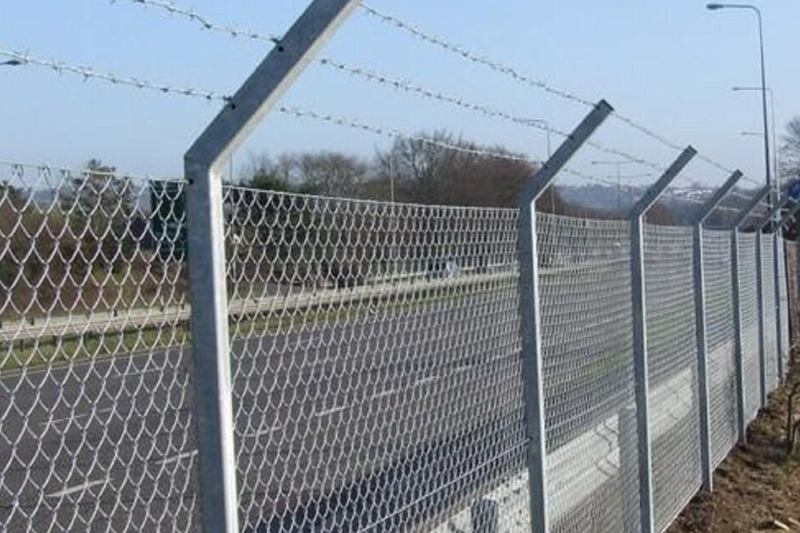

The spec
Taller, heavier chain link costs more than a residential roll of the same length.
Commercial fences
A commercial fence is a spec, not a backyard panel stretched around a lot. Storage yards, equipment, and job sites need a heavier frame, a taller line, and a gate a truck can use. We quote that separately from residential chain link.


Use it for a contractor yard, a storage lot, a shop perimeter, or any site where people and vehicles need to be kept on the right side of the line. Gauge, height, and the gate are the spec. A residential kit around a work yard fails at the gate first.
Barbed top arms show up on some commercial specs. They are not a default, and they are not a residential product. If the site does not need them, we do not add them. House fences stay on the chain link and wood pages.
What are you keeping in, what has to drive through, and who uses the yard at night.
Height, gauge, coating, and whether the top is plain or has arms.
Terminal posts and gate posts are sized for the fabric and the vehicles.
Swing or a layout the trucks can actually use, with hardware that latches.
We do not publish a price list. These are the details that move an estimate.
Taller, heavier chain link costs more than a residential roll of the same length.
Commercial perimeters add up. Corners and grade changes add posts.
A wide gate is often a large share of the price because of the leaf and the posts.
Asphalt, concrete, rock, and limited access change how the posts go in.
It follows the spec. Height, gauge, footage, and the vehicle gate do more to the price than a residential per-foot habit. We do not price a work yard off a backyard rate. The estimate lists what is being built.
Yes. That is the job this page is for. We plan the opening for the trucks you use, not for a lawn mower. If the site only needs a light boundary, we will say that a residential chain-link line is enough.
Yes. A commercial line without a workable gate is unfinished. Swing gates are the common request. The posts and hardware are part of the same quote, because the gate is what fails when they are undersized.
Only if the site calls for it. Some yards want angled arms. Many do not, and a house never does. We treat barbed wire as a spec item, not a decoration, and we leave it off when it does not belong.
Yes. Tell us the height and the mesh you need, or let us recommend one after we see what the yard is holding. The quote names gauge, height, coating, and gate size so you can compare it with another bid on the same fence.